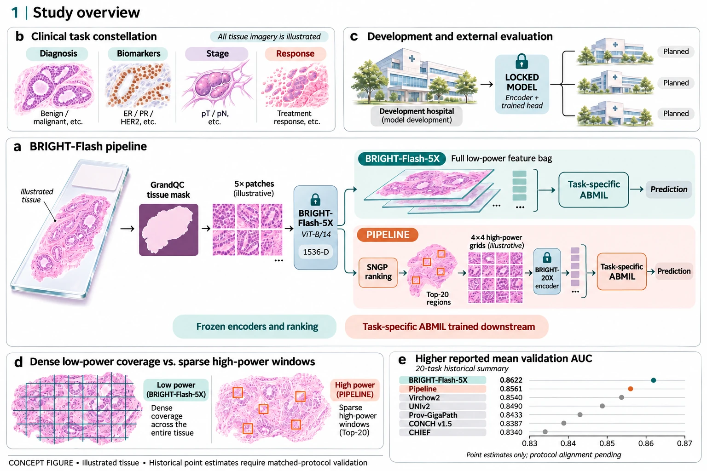
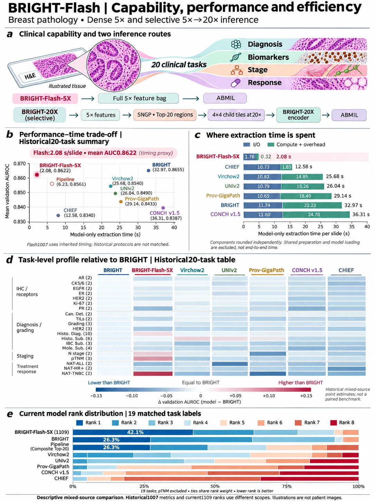
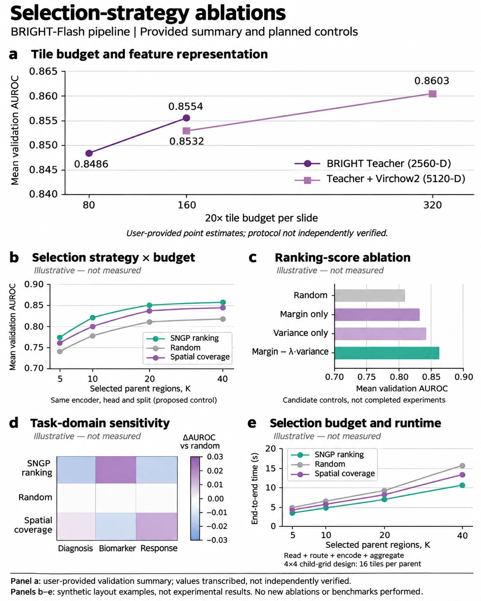
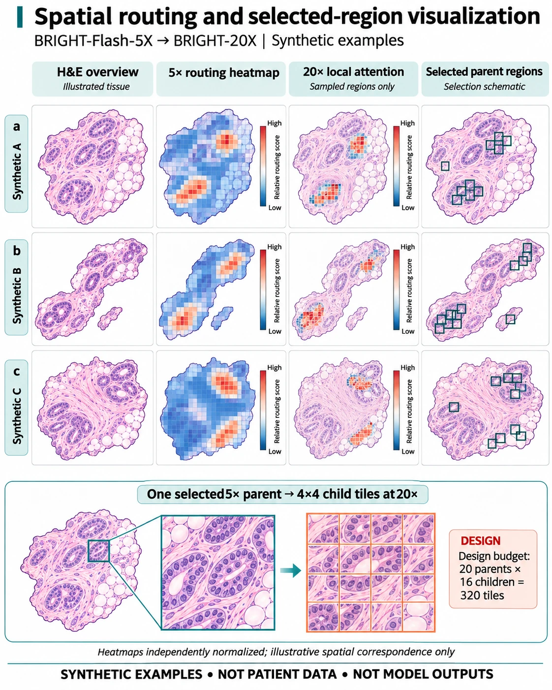
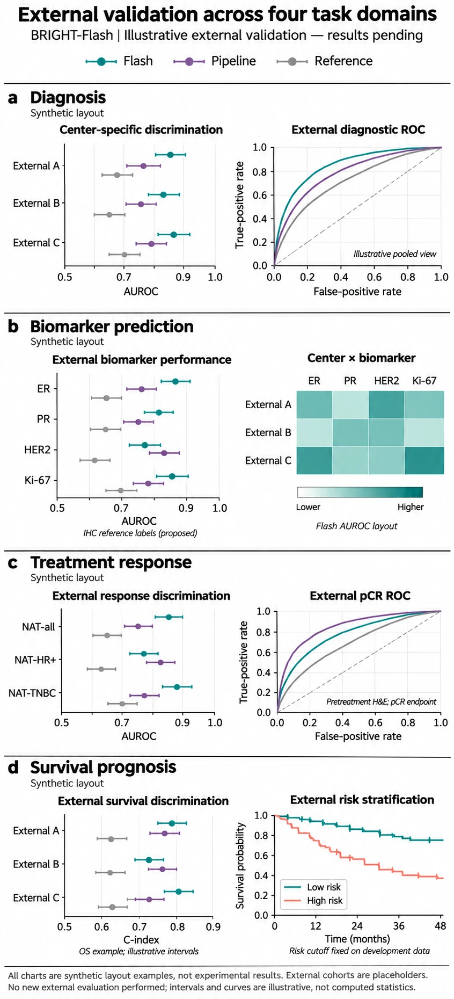
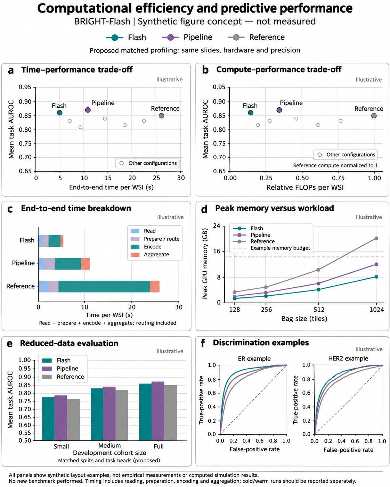
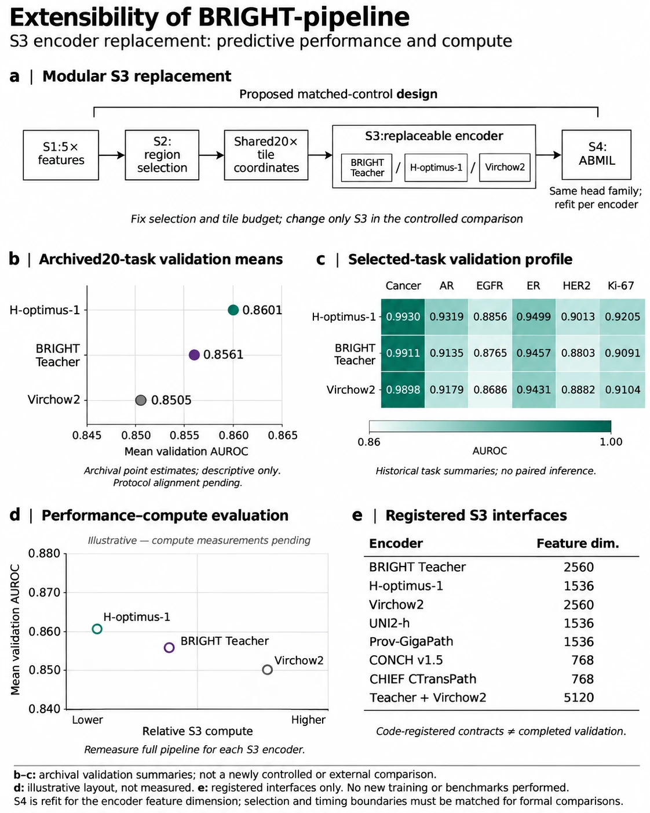

乳腺癌 WSI 多任务模型 ｜ 低倍全片密集覆盖 vs 高倍稀疏采样
点击任意图片放大 · 滚轮缩放 · 拖拽平移 · ← → 切换
展示方向开篇“地图”：一次交代双路由管线、20 个临床任务、外部验证设置，以及 5x 密集覆盖与 20x 稀疏窗口的差别，让读者先知道你要证明什么。
a 双路由管线 · b 四类任务域 · c 开发院 → 锁定模型 → 外院 · d 覆盖度对比 · e 历史均值

展示方向主对照图：横轴耗时、纵轴精度，把 BRIGHT-Flash 放在左上角；再用逐任务 ΔAUROC 与排名分布说明它在哪些任务域赢、哪些持平。
a 能力与两条路由 · b 精度-时间 · c 时间构成 · d 逐任务差异 · e 排名分布

展示方向把“为什么用这个选择器”拆成四个可单独否证的对照：tile 预算、选择策略、排序打分、任务域敏感度；a 已有实测点，b–e 是待跑的设计。
a tile 预算 · b 策略 × 预算 · c 排序打分 · d 任务域 · e 预算与耗时

展示方向机制图：用“5x 路由热图 → 20x 局部注意力 → 选中父块”三列，把抽象的选择变成审稿人可肉眼核对的空间对应关系。
三行示例 · 底部：1 个选中 5x 父块 → 4×4 子瓦片（20 × 16 = 320）

展示方向外推范围声明：诊断、标志物、治疗反应、生存四条线各给“逐院 forest + ROC/KM”，事先固定外部验证要交的答卷格式。
a 诊断 · b 标志物 · c 治疗反应 · d 生存

展示方向效率的“公平上报”：时间、算力、显存、数据规模分四轴画，并拆开时间构成，正面回应“你的快是不是省了步骤”。
a 时间-精度 · b 算力-精度 · c 时间分解 · d 显存-负载 · e 数据缩减 · f 判别示例

展示方向把方法讲成“插槽”而非一次性装置：固定选择与预算，只换 S3 编码器，用档案结果与接口表证明这条管线可复用、可扩展。
a S3 模块替换 · b 档案 20 任务均值 · c 任务谱 · d 性能-算力 · e 已注册接口
